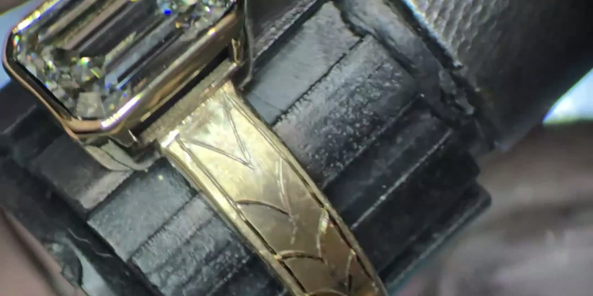
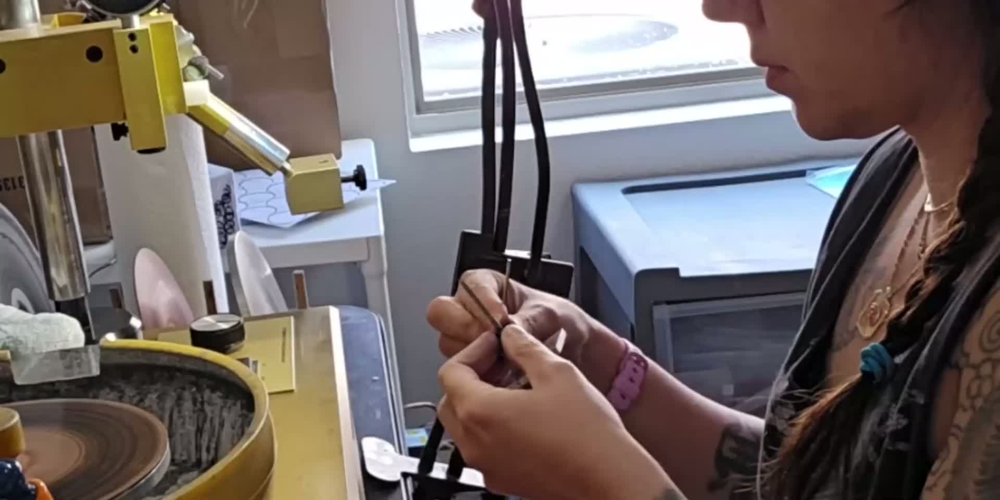
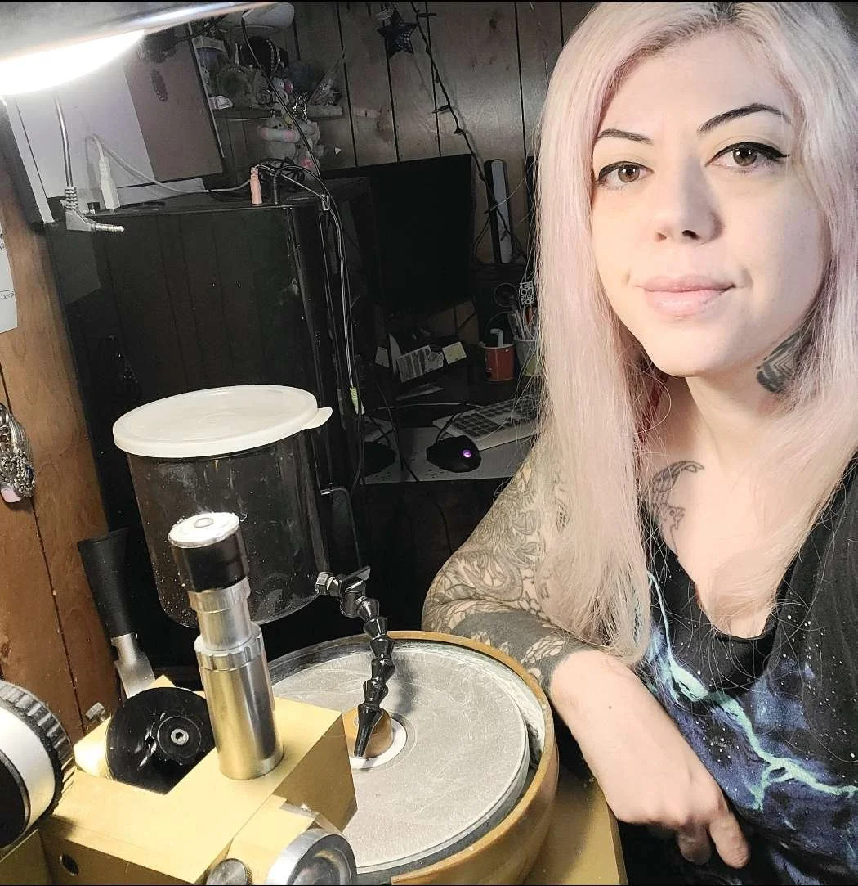
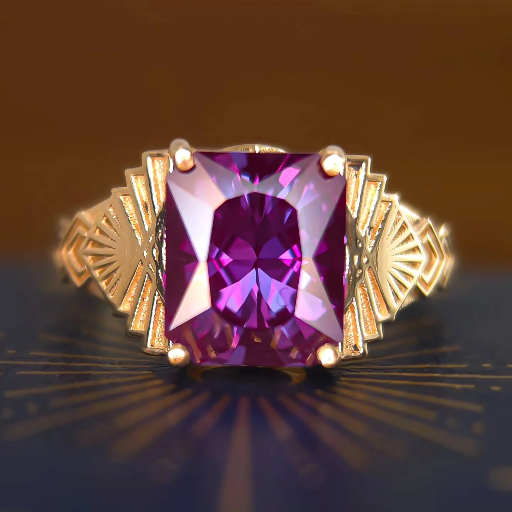
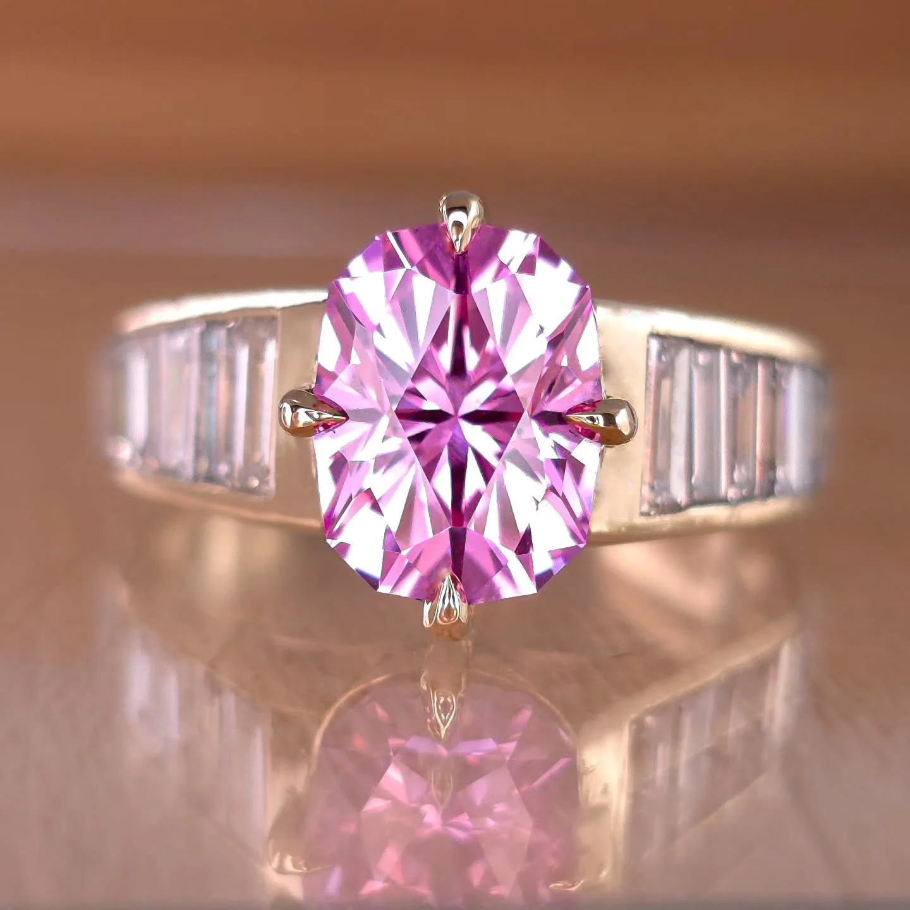
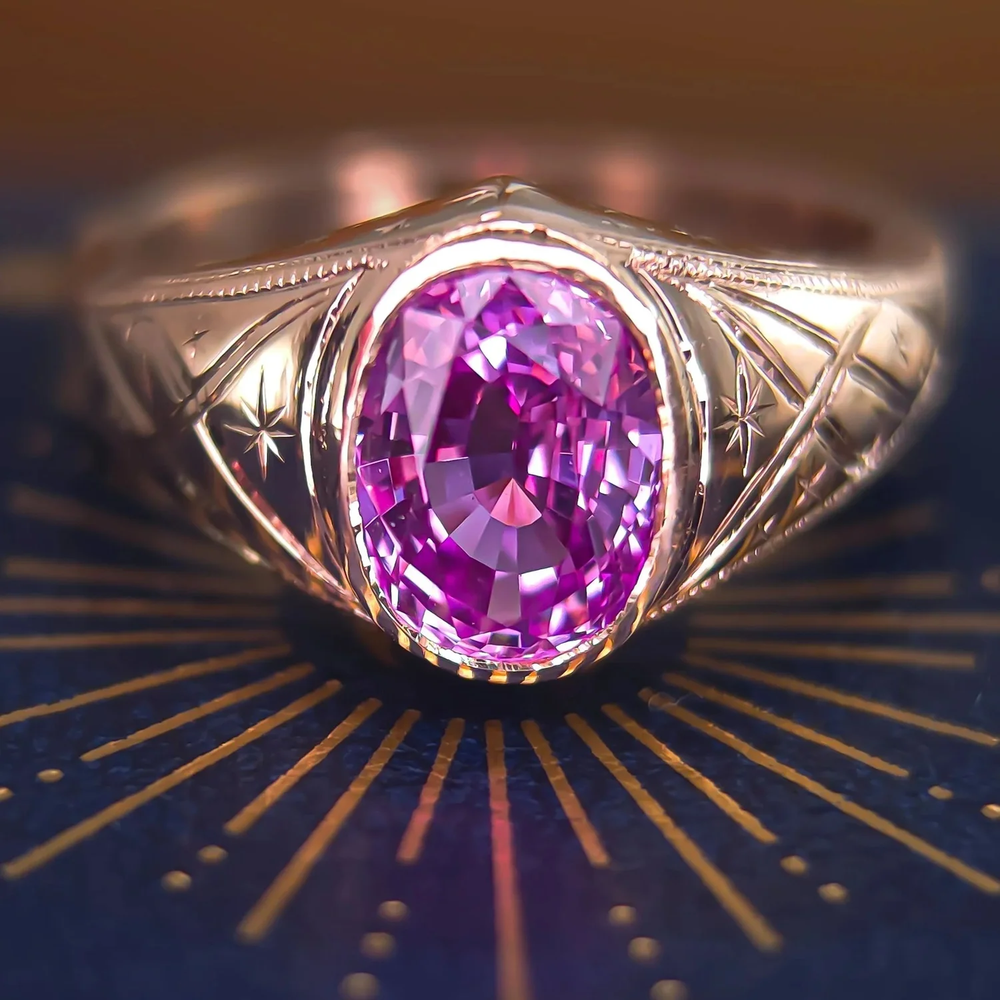

Some stones turn colors.
Custom Gems Turn Heads
Cut by hand, one at a time.
The hand and the cut


Rana works each facet at the lap.
From her home studio in Las Vegas.
Cutting stones for six years. Designing Jewelry for nearly a Decade
Selected work



Some of what she's made.
See what's ready now, or choose a design Rana can make for you.